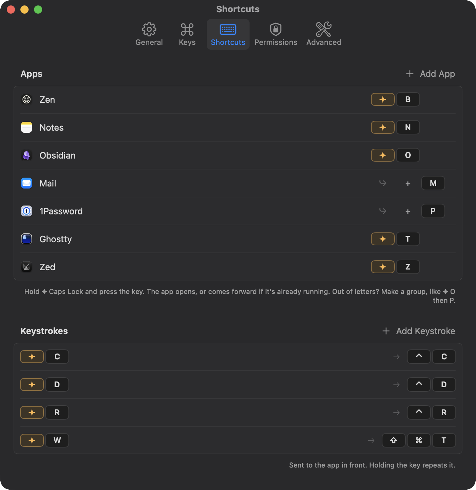
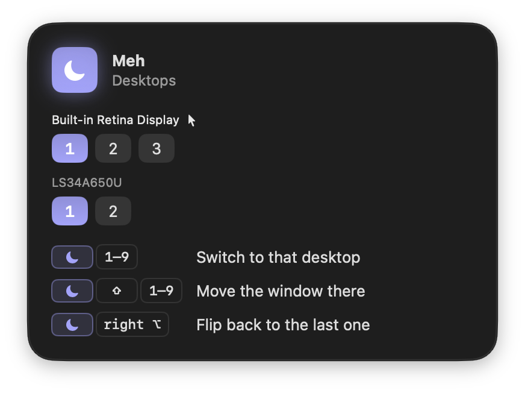
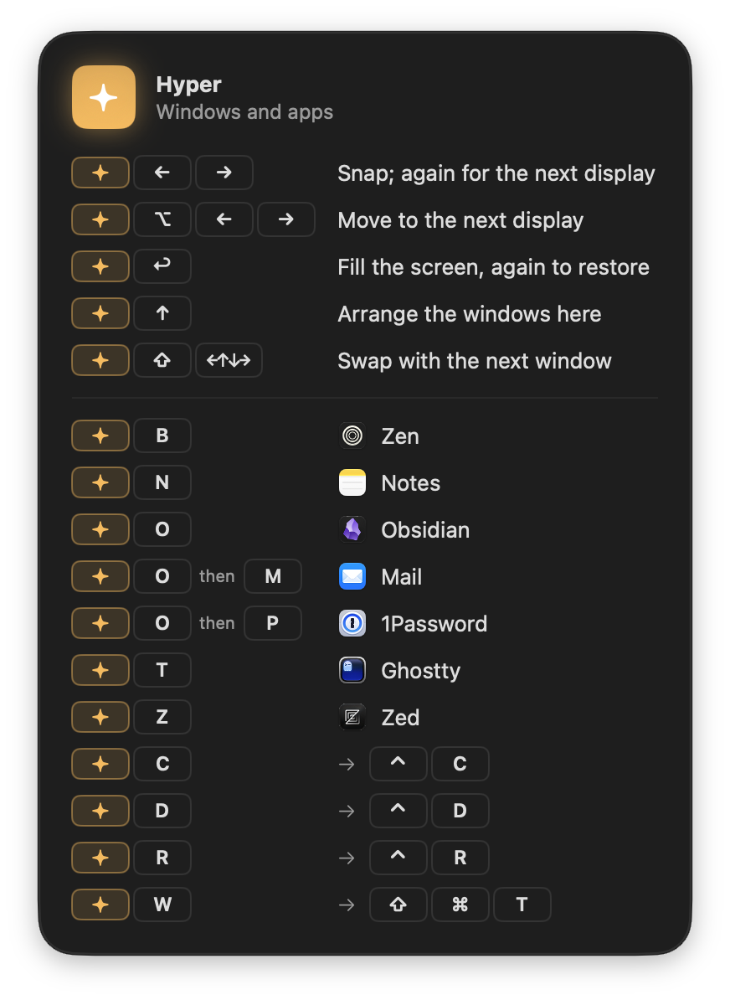

Two private keys
for your Mac.
Caps Lock becomes ✦ Hyper and right ⌘ becomes ☾ Meh. Hold one and the rest of your keyboard opens apps, arranges windows, and jumps between desktops.
brew install --cask rxmeez/tap/superkeys
Keys you already own.
Finally doing something.
Neither key types, locks, or reaches the app you're in. Everything pressed while one is held is caught, so a mistyped chord never leaks a stray character.
Open any app
Pick a key for each app you use. It opens, or comes forward if it's already running.
Arrange windows
Snap to halves, fill the screen, or lay out up to four windows with one chord.
Jump desktops
Go to any desktop, send a window there, or flip back to the last one.
Any app,
one key.
✦ B for your browser, ✦ T for your terminal, ✦ N for notes. Any key you like, set in a second: pick the app, press the key.

Snap it.
Or arrange it all.
- ←→Snap left or right; again for the next display
- ↩Fill the screen, again to restore
- ⌥←→Move to the next display as it is
- ↑Arrange up to four windows, again to undo
- ⇧←↑↓→Swap with the window next to it
The window you're in always takes the big slot. It only arranges when you ask: new windows are never tiled behind your back.
Every desktop,
one key away.
- 1–9Switch the display under the pointer
- ⇧1–9Move the window there and follow it
- right ⌥Flip back to the previous desktop
Desktops that don't exist yet are created for you.

Two screens?
Same two keys.
Keep pressing ✦ → and a window walks half by half across your displays, in the order they sit on your desk. And every display keeps its own desktops: ☾ acts on whichever one your pointer is on.
- ←→Snap to a half; again to step onto the next display
- ⌥←→Throw the window to the next display, same size and place
- 1–9Switch desktops on the display under the pointer
- right ⌥Flip back, remembered for each display
Caps Lock as Control.
Or any shortcut.
✦ plus a key can send any key combination to the app in front. Live in a terminal? Stop, exit and search without reaching for ⌃. Hold the key and it repeats, so ✦ R keeps stepping back through your history.
- C⌃ C: stop a running command
- D⌃ D: end input, or close the shell
- R⌃ R: search your command history
# ~/.config/superkeys/config.toml [keys] C = "ctrl+c" D = "ctrl+d" R = "ctrl+r" W = "cmd+shift+t" # reopen a closed tab
Set them up in the welcome tour, in Settings, or in a plain config file that lives happily in your dotfiles and applies the moment you save it.
Forgot a chord?
Just hold.
Hold ✦ or ☾ for a moment and a glass panel shows everything that key does, including your own app keys. Let go and it's gone. It never takes focus.

25 seconds of Superkeys.
Apps, snapping, arranging, two displays and their desktops, start to finish.
Why not Rectangle, Raycast or Karabiner?
They're all excellent, and Superkeys gets along with them. It's for a narrower job: one key you hold, that never leaks into your apps.
Rectangle
Keyboard window snapping, on multi-key shortcuts like ⌃⌥←.
Superkeys snaps and arranges from a single held key, walks windows across displays, and also opens apps and moves between desktops.
Raycast
A launcher and command palette, with hotkeys you can bind to apps and window layouts.
Superkeys is no launcher: nothing to type, no search box. Hold ✦ and press a key, and the app is there.
Karabiner-Elements
Remaps anything, including a Hyper key that sends ⌃⌥⇧⌘ to apps, set up in JSON with a system driver.
Superkeys' keys are private, so no app ever sees or reacts to them, unless you choose to send a keystroke. No driver and no JSON to write: a settings window and one Accessibility switch, plus a plain config file if you want one.
It stays out of the way.
Exactly what it can see, stores and sends: the privacy page.
Keystrokes kept
Keys pass straight through unless ✦ or ☾ is held. Nothing is recorded.
Request a day
A check of superkeys.space for updates, sending nothing but the version. No analytics, no accounts. Turn it off in Settings.
Idle CPU
No timers or polling. Superkeys, and the tiny helper that keeps Caps Lock from ever getting stuck, wake only when something happens.
To snap a window
Native Swift, AppKit and the Accessibility API. No Electron, no scripting layer.
Superkeys
Two private keys for your Mac. Free, for macOS 14 and later.